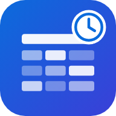
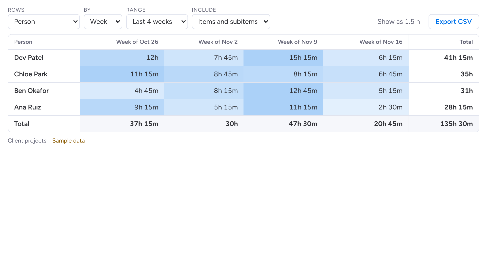
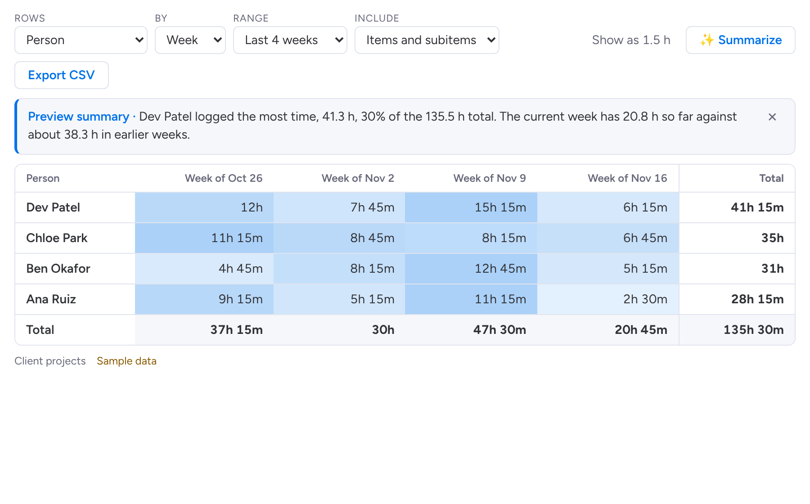

Time Report by Tallyfield AppsHours per person per week, subitems included
Time Report turns the time tracking columns on your monday.com boards into the table managers actually ask for: who logged how many hours, week by week. It counts subitems too, which monday's own time tracking widget leaves out.

What it does
- Rows by person, item, item and subitem, or group. Columns by day, week or month.
- Ranges from this week to this year. Weeks start on Monday.
- Choose items, subitems or both, and one time tracking column or all of them.
- Show time as 1h 30m or as 1.5 for timesheets and invoices.
- Export the table to CSV in one click.
- Running timers count up to now. A session that crosses the range edge is split, so totals match the dates you picked.
A summary in plain words
Press Summarize and monday AI writes two or three sentences about the table on screen: who logged the most, how this week compares, and anything uneven. It uses your account's monday AI and only the numbers in the table.

Pricing
- Free for small teams.
- $1 per seat per month for larger teams, billed through monday.com, with a 14-day free trial.
Private by design
Time Report runs inside your monday.com account. It has no server of its own. It asks to read boards and people's names, and to use monday AI only when you press Summarize.
Support
Send us a support request. We reply within two working days.
Also from Tallyfield Apps: Dashboard Math, formulas for monday.com dashboards.